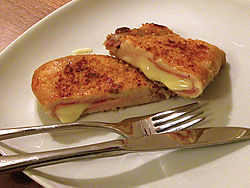

Cordon Bleu

Description
Cordon Bleu is a breaded and pan-fried piece of meat filled with cheese.
Ingredients
- 4 skinless and boneless chicken breasts
- 4 thinly slices of prosciutto
- 1/2 pound grated Gruyere
- 1/4 cup all-purpose flour
- Salt and pepper
- 1 cup panko bread crumbs
- 4 sprigs of fresh thyme
- 1 clove of garlic
- 2 tbsp of butter
- 2 eggs
- Extra virgin olive oil
Steps
- Preheat oven to 350 degrees
-
Lay one chicken breast between 2 pieces of plastic wrap.
Pound the chicken to 1/4 of its original thickness.
Remove top sheet of plastic, lay 2 slices of prosciutto over chicken and sprinkle cheese over prosciutto.
Roll chicken breasts tighlty inside plastic wrap.
Repeat with remaining chicken breasts.
-
Season flour with salt and pepper.
Mix bread crumbs, thyme, garlic, salt, pepper, and melted butter.
Beat eggs and season.
-
Remove plastic wrap.
Dust chicken with flour, dip in egg mixture, and coat with bread crumbs.
Coat a baking pan with olive oil and transfer.
Bake for 20-25 minutes.
-
Cut chicken into pinwheels and serve on top of brussel sprouts hash or anything else you desire.
Credits